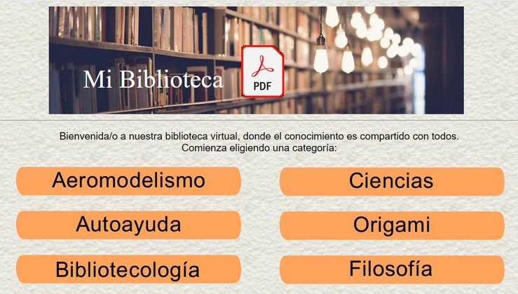
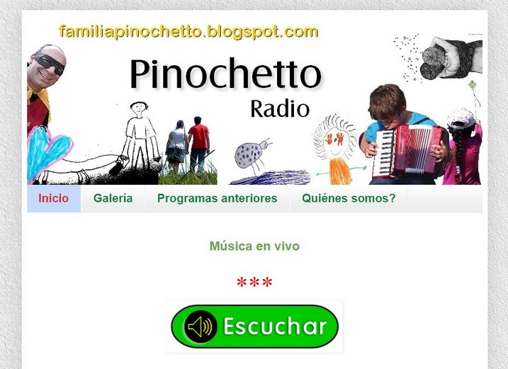
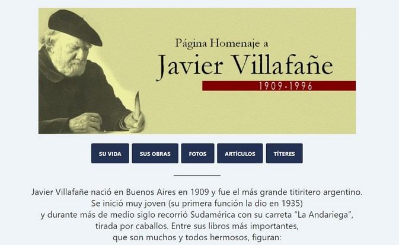
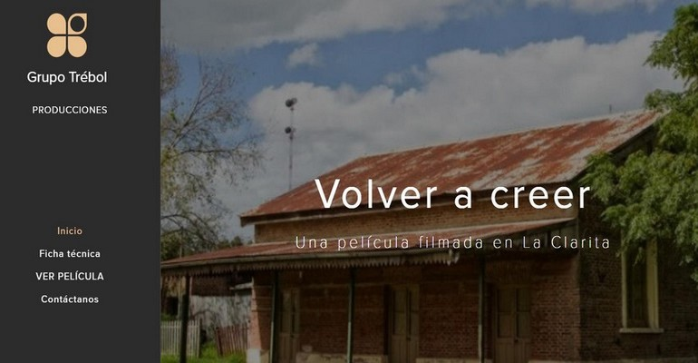
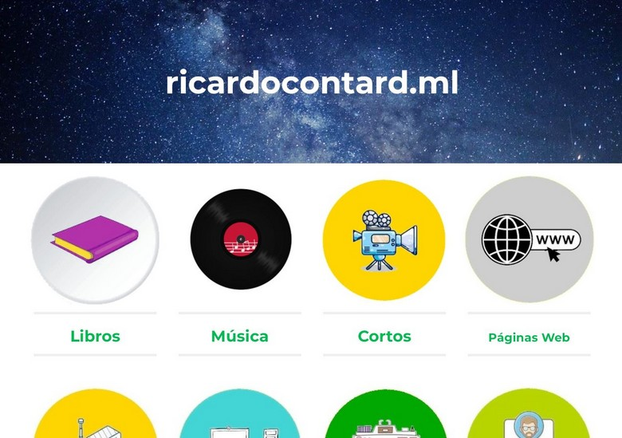
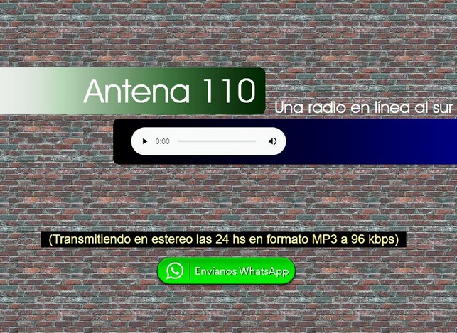

Nuestro trabajo también incluye diseño web, para promocionar nuestros productos y compartir información.

Una página que facilita una colección de más de 1700 archivos en formato PDF de lectura y descarga libres, especializados en temas variados: Aeromodelismo, Autoayuda, Bibliotecología, Biografías, Ciencias, Educación, Literatura y más...

"Radio Pinochetto" fue uno de los proyectos del año 2020 por el que creamos una Radio en Línea familiar, para comunicarnos y entretenernos mutuamente durante este período tan "quedate en casa"; compartiendo momentos de diversión, buena música y desafíos muy interesantes, interactuando con un creciente y renovado número de oyentes.
Llegamos a emitir 43 programas, de los cuales la mayoría quedaron registrados y están disponibles para escuchar en el blog de la Radio.

Un homenaje al Maestro de los titiriteros Don Javier Villafañe, quien nos ha dejado su imborrable huella a través de una prolífera obra literaria; entre la que se cuentan poesías, cuentos, leyendas, obras para teatro y títeres y un sin fin de anécdotas de sus viajes por el mundo y las letras.
Incluye enlaces para lectura y descarga de bibliografía invaluable.

Quizás el único testimonio en la web del épico proyecto de un grupo de amigos, en un pueblo del Departamento Colón llamado La Clarita (Entre Ríos, Argentina), quienes se propusieron realizar una película con los materiales y recursos mínimos, donde el elenco principal fueron los mismos vecinos.

Megasitio con toda la información acerca del creador y desarrollador de cada proyecto de IoSoft. Incluye enlaces de contacto, galería de fotos, "biografía autorizada", semblanzas de proyectos musicales, literarios, audiovisuales, y mucha información más...

Una nueva forma de compartir música y entretenimiento.
Una puerta hacia otros caminos de la palabra y la armonía.
IoSoft Producciones
IoSoft Producciones